Chaque jour, la France produit des milliers de jeux de données publiques. Créations d'entreprises, marchés publics, transactions immobilières, indicateurs de santé, chiffres de l'emploi. Ces données sont financées par les citoyens. Elles racontent l'histoire de nos territoires : leur vitalité, leurs fragilités, leurs mutations silencieuses.
Pourtant, personne ne les lit.
Quelque part en France, une maire d'une commune de 3 000 habitants essaie de comprendre pourquoi les commerces de sa rue principale ferment un à un. Les chiffres existent : créations et radiations d'entreprises, évolution du pouvoir d'achat, flux de mobilité. Mais ils sont éparpillés entre l'INSEE, le BODACC, la Banque de France et trois autres plateformes qu'elle ne connaît même pas. Elle n'a pas de data analyst dans son équipe. Elle a un secrétaire général, deux agents administratifs, et un budget serré.
Ailleurs, un père de famille regarde les résultats de l'école de ses enfants sur un classement national. Il voudrait comprendre, pas juger, comprendre. Pourquoi cette école, dans ce quartier, avec ces moyens, obtient ces résultats. Les données de la DEPP existent. Elles sont "ouvertes". Mais entre un fichier CSV de 800 000 lignes et une réponse à sa question, il y a un gouffre que seul un ingénieur données peut franchir.
Une association de quartier monte un dossier pour obtenir un financement. Elle a besoin de prouver que son territoire souffre : chômage des jeunes, fermeture de services publics, précarité alimentaire. Les données existent. Elles le prouvent. Mais les assembler, les croiser, les rendre lisibles ? Il faudrait des semaines de travail qualifié. L'association a des bénévoles motivés, pas des data scientists.
Ces gens ne sont pas incompétents. Ils sont exclus. Exclus d'une ressource qui leur appartient, par une barrière technique que personne n'a décidé de construire mais que personne ne prend la peine d'abattre.
Les données publiques sont théoriquement ouvertes, mais pratiquement fermées. Ouvertes pour les bureaux d'études facturant 800 euros la journée. Ouvertes pour les cabinets de conseil. Fermées pour le citoyen, l'élu local, l'association de quartier, ceux-là mêmes qui en auraient le plus besoin.
Ce paradoxe a un nom en économie. Il s'appelle l'enclosure. Et il a des conséquences très concrètes : des décisions prises à l'aveugle, des territoires qui se dégradent sans que personne ne voie les signaux, des citoyens qui décrochent parce qu'on leur refuse, sans le dire, les moyens de comprendre.
La tragédie des communs : un mythe destructeur
En 1968, le biologiste Garrett Hardin publie dans Science un article qui va marquer un demi-siècle de pensée économique : The Tragedy of the Commons[1]. Sa thèse est simple et séduisante : toute ressource partagée est vouée à la destruction. Si un pâturage est ouvert à tous, chaque éleveur a intérêt à y ajouter une vache supplémentaire, le bénéfice est individuel, le coût est collectif. Résultat : le pâturage est surexploité et s'effondre.
De cette métaphore, Hardin tire une conclusion radicale : les communs ne fonctionnent pas. Il n'y a que deux solutions : la privatisation ou le contrôle étatique.
La liberté dans un commun apporte la ruine à tous.
Garrett Hardin, The Tragedy of the Commons, 1968
Pendant quarante ans, cette idée a servi de justification intellectuelle à la privatisation de tout : l'eau, les forêts, le spectre radio, les brevets sur le vivant. Et aujourd'hui, elle sert de justification implicite à la privatisation des données publiques. Si les données sont "ouvertes", raisonne-t-on, alors quelqu'un finira par en abuser. Mieux vaut les confier à des intermédiaires privés qui sauront les "valoriser".
Le problème, c'est que Hardin avait tort. Et qu'une économiste a passé sa vie à le démontrer.
Elinor Ostrom : la troisième voie
En 2009, Elinor Ostrom devient la première femme à recevoir le prix Nobel d'économie[2]. Son crime ? Avoir étudié des cas réels au lieu de modéliser des situations théoriques.
Pendant trente ans, Ostrom a étudié des communautés qui gèrent avec succès des ressources partagées : des systèmes d'irrigation au Népal, des zones de pêche au Japon, des forêts communales en Suisse qui fonctionnent depuis le XIIIe siècle. Des communs qui, selon Hardin, auraient dû s'effondrer il y a longtemps.
Sa découverte fondamentale : entre le marché et l'État, il existe une troisième voie. Les communautés peuvent gérer durablement des ressources partagées, à condition de respecter certains principes de gouvernance.
Ni le marché ni l'État n'ont réussi uniformément à permettre aux individus d'atteindre une utilisation productive et durable des ressources naturelles. Les communautés d'individus ont reposé sur des institutions qui ne ressemblent ni à l'État ni au marché pour gouverner certaines ressources avec des degrés raisonnables de succès sur de longues périodes.
Elinor Ostrom, Governing the Commons, 1990[2]
Ostrom identifie huit principes de conception que partagent les communs durables. Ce ne sont pas des idéaux abstraits, ce sont des patterns empiriques observés dans des centaines de communautés à travers le monde.
Les 8 principes d'Ostrom appliqués aux données publiques
On sait qui fait partie de la communauté et ce qui constitue la ressource. Pour Tawiza : le code est ouvert (MIT), les données collectées sont exclusivement publiques, les contributeurs sont identifiables sur GitHub.
Les règles d'utilisation correspondent aux conditions locales. Chaque territoire a ses spécificités : une commune rurale n'a pas les mêmes besoins qu'une métropole. Les outils s'adaptent, pas l'inverse.
Ceux qui sont affectés par les règles participent à leur élaboration. Les décisions architecturales se prennent sur GitHub Discussions. La roadmap est publique. Les RFC sont ouvertes aux commentaires.
Les membres de la communauté surveillent le respect des règles. Le code est auditable. Les algorithmes sont documentés. Les Pull Requests sont revues par des pairs. Pas de boîte noire.
Les violations sont sanctionnées de manière proportionnelle. Un contributeur qui dégrade le code reçoit d'abord un feedback, puis un revert, puis un ban temporaire. Pas de tolérance zéro aveugle, pas de laxisme non plus.
Des espaces accessibles et peu coûteux pour résoudre les désaccords. Issues GitHub, Discussions, Code of Conduct, processus de médiation documenté. Les conflits sont normaux, leur résolution est ce qui compte.
Les autorités extérieures reconnaissent la légitimité de la communauté à s'auto-gouverner. La licence MIT garantit juridiquement cette autonomie. Aucune entité ne peut révoquer le droit de la communauté à forker.
Pour les grandes ressources, la gouvernance s'organise en niveaux imbriqués. Tawiza a des mainteneurs par module, des contributeurs par source de données, et une gouvernance globale pour les décisions d'architecture.
L'erreur de Hardin n'était pas d'avoir identifié un risque réel (la surexploitation existe). Son erreur était de n'avoir imaginé que deux solutions : le marché ou l'État. Ostrom a montré qu'il en existe une troisième : la communauté organisée.
La théorie des jeux : pourquoi coopérer est rationnel
Si Ostrom explique comment les communs peuvent fonctionner, la théorie des jeux explique pourquoi ils devraient. Et pourquoi, sans structure, ils échouent.
Le dilemme du prisonnier
Imaginez deux communes voisines. Chacune pourrait investir dans un outil d'analyse des données publiques. Si les deux coopèrent et mutualisent, elles obtiennent un outil puissant pour un coût divisé par deux. Si une seule investit, elle supporte tout le coût tandis que l'autre en profite gratuitement. Si aucune n'investit, elles restent toutes les deux aveugles sur leur territoire.
C'est le dilemme du prisonnier. La stratégie individuellement rationnelle (ne pas investir, attendre que l'autre le fasse) conduit au pire résultat collectif : personne n'investit, personne ne comprend son territoire.
La matrice du dilemme territorial
| Commune B coopère | Commune B défecte | |
|---|---|---|
| Commune A coopère | Outil puissant, coût partagé +3 / +3 |
A payé seule, B en profite -1 / +5 |
| Commune A défecte | A profite, B payé seule +5 / -1 |
Pas d'outil, statu quo 0 / 0 |
En jeu unique, la défection est rationnelle. Mais les collectivités, les associations, les citoyens ne jouent pas un jeu unique, ils sont là pour longtemps. Et c'est là que tout change.
Le tournoi d'Axelrod : la revanche de la coopération
En 1984, le politologue Robert Axelrod organise un tournoi informatique qui va révolutionner la théorie des jeux[3]. Il invite des chercheurs du monde entier à soumettre des stratégies pour un dilemme du prisonnier répété, le même jeu, mais joué des centaines de fois de suite, avec mémoire des coups précédents.
La stratégie gagnante est aussi la plus simple : Tit for Tat (donnant-donnant), soumise par Anatol Rapoport. Quatre règles :
Commencer par coopérer. Ne jamais être le premier à trahir.
Si l'autre défecte, défector en retour au coup suivant. La coopération n'est pas de la naïveté.
Si l'autre revient à la coopération, coopérer immédiatement. Ne pas punir indéfiniment.
Que son comportement soit prévisible. Les autres doivent pouvoir comprendre votre stratégie.
Ce qui est remarquable dans la victoire de Tit for Tat, c'est que cette stratégie ne bat jamais personne. Elle gagne le tournoi non pas en exploitant les autres, mais en provoquant la coopération.
Robert Axelrod, The Evolution of Cooperation, 1984[3]
Axelrod découvre que les stratégies qui performent le mieux partagent quatre propriétés : elles sont gentilles (ne trahissent jamais en premier), rétorquantes (punissent la trahison), pardonnantes (ne gardent pas rancune) et claires (prévisibles). Les stratégies "malines" qui essaient d'exploiter les autres finissent systématiquement en bas du classement.
La leçon pour les biens communs numériques est limpide : dans un jeu répété, la coopération bat la prédation. À condition que le jeu soit structuré pour ça.
Le jeu du bien public : pourquoi le passager clandestin menace tout
Il existe un autre jeu, plus directement lié à notre problème : le jeu du bien public. Chaque joueur reçoit une dotation et choisit combien investir dans un pot commun. Le pot est multiplié par un facteur (la valeur de la coopération) puis redistribué également à tous, y compris à ceux qui n'ont rien mis.
La tentation du passager clandestin (free rider) est évidente : ne rien mettre, laisser les autres financer, et profiter quand même. Si tout le monde raisonne ainsi, le pot reste vide et tout le monde perd.
C'est exactement ce qui se passe avec les données publiques. L'État les produit (avec nos impôts). Les grandes entreprises les exploitent. Les citoyens et les petites collectivités n'en bénéficient pas, ils n'ont pas les outils.
Les recherches expérimentales montrent que trois mécanismes empêchent l'effondrement du bien public :
Tawiza n'est pas un acte de charité. C'est une infrastructure de coopération. En réduisant le coût d'accès aux données publiques, en rendant la contribution visible (GitHub), et en structurant la communauté selon les principes d'Ostrom, nous créons les conditions pour que la coopération devienne la stratégie dominante.
Pourquoi chaque partie prenante est indispensable
Un bien commun n'est pas un produit qu'on livre à des clients. C'est un écosystème où chaque acteur joue un rôle structurel. Retirez un acteur, et l'équilibre s'effondre, comme dans un jeu coopératif où chaque joueur détient une pièce du puzzle.
Ostrom l'a montré empiriquement : les communs durables ne sont pas ceux où un acteur domine (l'État, le marché, ou même les développeurs), mais ceux où les différents types d'acteurs interagissent dans des rôles complémentaires.
Le citoyen : le gardien de la légitimité
Il s'appelle Karim, il a 42 ans, il est artisan à Vierzon. Sa ville a perdu 5 000 habitants en vingt ans. Il le voit : les vitrines vides, le collège qui a fermé une classe, les voisins qui partent. Mais quand il en parle, on lui répond "c'est partout pareil" ou "c'est la mondialisation". Il voudrait des chiffres. Pas pour se plaindre, pour comprendre. Et peut-être pour agir.
Dans la théorie des jeux, le citoyen est le joueur qui donne sa valeur au bien public. Sans utilisateurs, le commun n'a pas de raison d'exister. Mais son rôle va bien au-delà de l'usage passif.
Le citoyen est celui qui pose les questions que personne ne pose. "Pourquoi les commerces ferment-ils dans ma rue ?" "Où vont les budgets de ma commune ?" "Combien d'entreprises ont été créées cette année dans mon département ?" Ces questions ne sont pas techniques, elles sont politiques, au sens noble du terme. Elles expriment le droit de savoir.
En théorie des jeux, le citoyen joue le rôle du signal. Sa demande signale aux autres acteurs (élus, développeurs) que le commun a de la valeur, ce qui justifie leur investissement. Sans cette demande, le bien public reste un projet technique sans ancrage territorial.
L'élu local : l'ancrage institutionnel
Elle est adjointe au maire d'une commune de 8 000 habitants dans le Pas-de-Calais. Chaque mois, elle doit arbitrer entre refaire le toit de l'école ou financer le centre social. Elle sait que des entreprises ferment, mais elle ne sait pas lesquelles, ni dans quels secteurs, ni si c'est pire qu'ailleurs. Le bureau d'études qui pourrait lui répondre coûte 15 000 euros. Son budget communication annuel est de 12 000.
Ostrom insiste sur le principe 7 : la reconnaissance par les autorités externes. Un commun qui n'est pas reconnu par les institutions est fragile. L'élu local apporte cette légitimité, et plus encore.
L'élu est celui qui connaît les besoins du terrain. Il sait que le taux de chômage officiel ne dit pas tout sur la réalité de l'emploi. Il sait que les marchés publics ont des subtilités que les chiffres bruts ne capturent pas. Il sait quelles données manquent, parce qu'il les cherche tous les jours pour prendre ses décisions.
Dans le jeu du bien public, l'élu est le multiplicateur. Quand une collectivité adopte Tawiza, elle ne fait pas que l'utiliser, elle le valide. Cette validation attire d'autres collectivités, ce qui enrichit le commun, ce qui attire d'autres utilisateurs. C'est un cercle vertueux de légitimité.
L'association : le contre-pouvoir
Ils sont cinq bénévoles dans un local prêté par la mairie. Leur association accompagne les familles en difficulté du quartier depuis sept ans. Ils savent, parce qu'ils le voient chaque jour, que la précarité alimentaire explose. Mais quand ils frappent à la porte d'une fondation pour un financement, on leur demande des chiffres. Des pourcentages. Des courbes. Ils ont des visages et des histoires. On leur demande des tableaux Excel.
Dans l'analyse d'Ostrom, les communs les plus résilients sont ceux qui disposent de mécanismes de surveillance mutuelle (principe 4) et de résolution de conflits (principe 6). L'association remplit naturellement ces deux fonctions.
L'association est le chien de garde du commun. Elle détecte les anomalies dans les données publiques : un marché public suspect, une évolution anormale du chômage, une dépense communale inexpliquée. Elle transforme les données brutes en arguments, les arguments en action civique.
En théorie des jeux, l'association joue le rôle du punisseur altruiste, celui qui, dans le jeu du bien public, sanctionne les passagers clandestins même quand ça lui coûte. Les recherches de Fehr et Gächter (2000)[4] montrent que la présence de punisseurs altruistes suffit à maintenir des niveaux élevés de coopération dans le groupe. L'association qui dénonce l'opacité maintient la pression pour que les données restent ouvertes et exploitables.
Le développeur : le bâtisseur d'infrastructure
Elle est développeuse backend dans une boîte de e-commerce à Lyon. Compétente, bien payée, et parfois, souvent, avec le sentiment que son talent sert à optimiser des taux de conversion. Le week-end, elle contribue à des projets open source. Elle cherche quelque chose qui a du sens. Pas un side project de plus, un projet où ses compétences techniques servent des gens qui en ont vraiment besoin.
Dans la métaphore des communs, le développeur ne récolte pas, il construit le système d'irrigation. Sans infrastructure technique, il n'y a pas de commun numérique. Mais une infrastructure sans utilisateurs est un chantier abandonné.
Le développeur apporte la capacité de transformer une intention en réalité. Il écrit les connecteurs API, optimise les pipelines de données, construit les visualisations, sécurise l'infrastructure. Chaque Pull Request est un investissement dans le bien public.
En termes de théorie des jeux, le développeur est celui qui réduit le coût de la coopération. Plus l'outil est simple à utiliser, plus le coût d'entrée dans le commun est faible, plus les acteurs coopèrent. C'est l'équivalent numérique de la construction d'une route : elle ne produit rien en elle-même, mais elle rend possible les échanges.
L'entrepreneur : le catalyseur d'impact
Il a 28 ans et il hésite. Créer sa boîte dans sa ville natale, une commune moyenne du Grand Est, ou partir à Paris comme tous les autres. Il a une idée, mais il ne sait pas si le marché local peut la porter. Il lui faudrait des données : combien d'entreprises similaires existent dans un rayon de 50 km, quel est le pouvoir d'achat du coin, est-ce que la tendance démographique est porteuse ou en déclin. Ces réponses existent, quelque part dans les serveurs de l'INSEE et de la Banque de France. Mais il ne le sait pas, et même s'il le savait, il ne saurait pas les trouver.
Ostrom ne s'oppose pas au marché, elle refuse le tout-marché. L'entrepreneur a sa place dans l'écosystème des communs, à condition de créer de la valeur sans détruire la ressource.
L'entrepreneur local qui utilise Tawiza pour détecter des opportunités sur son territoire ne pille pas le commun, il l'enrichit. Sa capacité à transformer des données en projets concrets (emplois, services, innovation) est ce qui donne aux autres acteurs la preuve que le commun fonctionne.
En théorie des jeux, l'entrepreneur est le démonstrateur de gains. C'est lui qui prouve que la coopération a des retombées concrètes, ce qui incite les autres à investir dans le commun à leur tour. Sans cette démonstration, le bien public reste théorique.
L'équilibre de Nash du bien commun
En théorie des jeux, un équilibre de Nash est une situation où aucun joueur n'a intérêt à changer de stratégie unilatéralement. C'est un état stable, pas nécessairement optimal, mais stable.
Aujourd'hui, l'équilibre de Nash des données publiques est un équilibre bas : personne n'investit dans les outils d'accès (trop coûteux individuellement), donc personne ne bénéficie des données (sauf ceux qui ont les moyens), donc personne n'a intérêt à investir. C'est la tragédie de Hardin qui se réalise, non pas par surexploitation, mais par sous-exploitation.
Tawiza vise à déplacer cet équilibre. En réduisant drastiquement le coût d'accès aux données publiques (l'outil est gratuit, open source, auto-hébergeable), nous modifions la structure du jeu. La coopération devient moins coûteuse que la défection. Le passager clandestin devient contributeur, parce que contribuer coûte moins cher que reconstruire l'outil dans son coin.
Ce n'est pas la nature humaine qui cause la tragédie des communs. C'est la structure du jeu. Changez la structure, et vous changez le résultat.
Elinor Ostrom
C'est exactement ce que fait l'open source : il change la structure du jeu. Au lieu de "je paie tout seul ou je ne paie pas", il propose "chacun contribue un peu, tout le monde bénéficie beaucoup". L'équilibre de Nash se déplace vers le haut. La coopération devient l'état stable.
Nos engagements
Ce manifeste n'est pas une déclaration d'intention. C'est un contrat, au sens d'Ostrom : un ensemble de règles que la communauté se donne et s'engage à respecter.
Le code restera sous licence MIT. Pas de version "enterprise" qui retire des fonctionnalités de la version libre. Pas de bait-and-switch. C'est le principe 7 d'Ostrom : le droit de la communauté à s'organiser ne peut pas être révoqué.
Tawiza ne collecte que des données publiques. Pas de tracking utilisateur, pas de cookies, pas de télémétrie. C'est le principe 1 d'Ostrom : les frontières de la ressource sont claires. Les données personnelles ne sont pas notre ressource.
C'est la lisibilité d'Axelrod : une stratégie prévisible engendre la confiance. Les choix techniques, les compromis, les arbitrages : tout est documenté publiquement.
C'est le principe 3 d'Ostrom : ceux qui sont affectés par les règles participent à leur élaboration. La roadmap est un document vivant, pas un décret. Les décisions structurantes se prennent sur GitHub Discussions.
IA 100% locale avec Ollama. Aucune donnée ne quitte votre serveur. Pas de dépendance à un cloud tiers qui peut changer ses conditions, ses prix, ou ses règles du jour au lendemain. Le commun ne doit dépendre que de sa communauté.
Références
- Hardin, G. (1968). « The Tragedy of the Commons ». Science, 162(3859), 1243-1248. doi:10.1126/science.162.3859.1243 ↩ L'article fondateur qui a popularisé l'idée que toute ressource partagée est vouée à la surexploitation. Hardin y soutient que seule la privatisation ou le contrôle étatique peut sauver les communs.
- Ostrom, E. (1990). Governing the Commons: The Evolution of Institutions for Collective Action. Cambridge University Press. doi:10.1017/CBO9780511807763 ↩ L'ouvrage majeur d'Ostrom, prix Nobel d'économie 2009. Elle y démontre, preuves empiriques à l'appui, que les communautés peuvent gérer durablement des ressources partagées sans privatisation ni intervention étatique, à condition de respecter huit principes de gouvernance.
- Axelrod, R. (1984). The Evolution of Cooperation. Basic Books. Wikipedia ↩ Axelrod organise un tournoi informatique de dilemme du prisonnier itéré. La stratégie gagnante, Tit for Tat (donnant-donnant), montre que la coopération bat systématiquement les stratégies prédatrices dans les jeux répétés. Voir aussi : Axelrod, R. & Hamilton, W.D. (1981). « The Evolution of Cooperation ». Science, 211(4489), 1390-1396.
- Fehr, E. & Gächter, S. (2000). « Cooperation and Punishment in Public Goods Experiments ». American Economic Review, 90(4), 980-994. doi:10.1257/aer.90.4.980 ↩ Recherche expérimentale démontrant que la possibilité de punir les « passagers clandestins » maintient des niveaux élevés de coopération. Les « punisseurs altruistes » sont la clé de la stabilité des biens publics.
- Nash, J.F. (1950). « Equilibrium Points in N-Person Games ». Proceedings of the National Academy of Sciences, 36(1), 48-49. doi:10.1073/pnas.36.1.48 Le concept fondamental de l'équilibre de Nash : une situation où aucun joueur n'a intérêt à changer unilatéralement de stratégie. Prix Nobel d'économie 1994.
- Loi n° 2016-1321 du 7 octobre 2016 pour une République numérique (dite « loi Lemaire »). Legifrance Consacre le principe d'ouverture par défaut des données publiques en France. Oblige les administrations de plus de 50 agents à publier leurs données. Cadre juridique fondateur de l'open data français.
- Hess, C. & Ostrom, E. (2007). Understanding Knowledge as a Commons: From Theory to Practice. MIT Press. doi:10.7551/mitpress/6980.001.0001 Extension de la théorie des communs aux ressources numériques et à la connaissance. Montre que les mêmes principes de gouvernance s'appliquent aux communs informationnels.
- Bollier, D. (2014). Think Like a Commoner: A Short Introduction to the Life of the Commons. New Society Publishers. Site de l'auteur Introduction accessible à la pensée des communs. Bollier montre comment cette vision du monde offre une alternative au tout-marché pour gérer les ressources partagées.
Rejoignez le mouvement
La tragédie des communs n'est pas une fatalité. Ostrom l'a démontré. Axelrod l'a formalisé. Des centaines de projets open source le prouvent chaque jour.
Karim à Vierzon mérite de comprendre pourquoi sa ville se vide. L'adjointe du Pas-de-Calais mérite des outils à la hauteur de ses responsabilités. L'association de quartier mérite de pouvoir transformer ce qu'elle voit en ce qu'elle peut prouver. La développeuse lyonnaise mérite un projet qui donne du sens à son talent. L'entrepreneur du Grand Est mérite de pouvoir décider avec des données, pas avec des intuitions.
Tawiza n'est pas un produit. C'est un pari : celui que des citoyens, des développeurs, des élus, des associations et des entrepreneurs peuvent construire ensemble l'infrastructure d'intelligence territoriale que la France mérite. Un bien commun numérique, gouverné par sa communauté, au service de tous les territoires.
Si vous croyez que les données publiques appartiennent au public. Si vous pensez que comprendre son territoire est un droit, pas un privilège. Si vous êtes convaincu que la coopération bat la prédation quand le jeu est bien structuré. Alors ce projet a besoin de vous.
Pas besoin de coder. Signaler un bug, poser une question, partager le projet, tester un territoire, écrire de la documentation, chaque contribution déplace l'équilibre. Les communs se construisent à plusieurs.

Tawiza (ⵜⴰⵡⵉⵣⴰ), l'entraide collective.